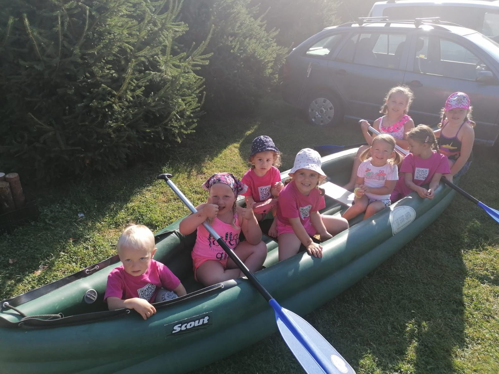
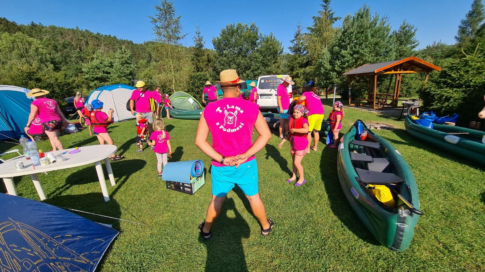

🛶 Berounka 2020
Tady to všechno začalo. 🦙
Pro většinu z nás, a hlavně pro děti, to byla první voda v životě. Nikdo tehdy netušil, že z jedné plavby vznikne tradice, která nás bude každý rok znovu dávat dohromady.
Bylo hodně smíchu, první vodácké zkušenosti, pár mokrých bot, trochu strachu z jezů a hlavně spousta krásných vzpomínek.
Právě na Berounce se zrodila naše parta T-Lama z Podmezí a začalo dobrodružství, které pokračuje dodnes. ❤️🛶🦙
📸 Fotky z plavby


